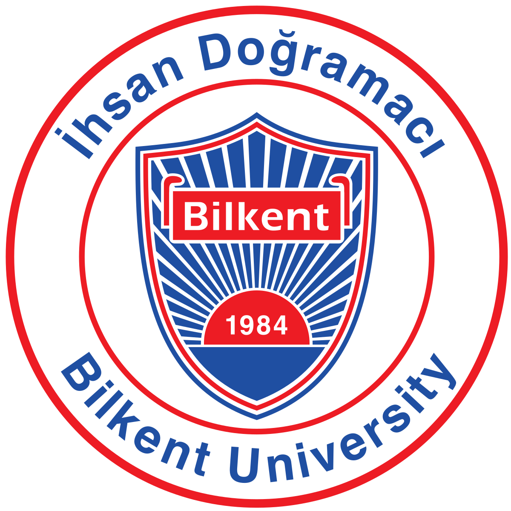
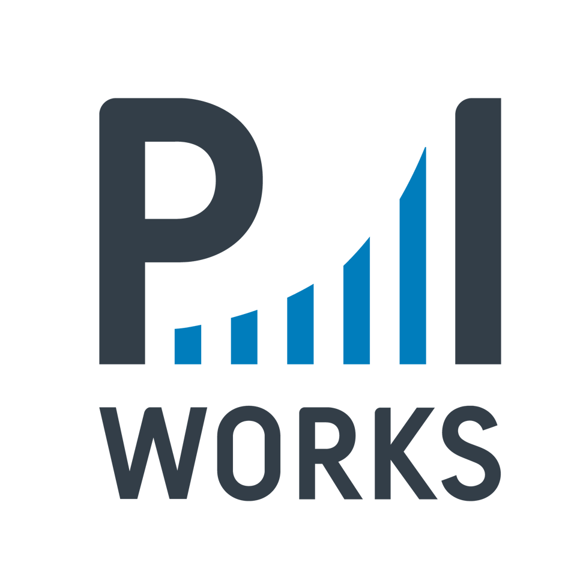

About Me
I am a fourth year Ph.D. candidate in Electrical and Computer Engineering at New York University's Tandon School of Engineering. I am actively engaged in cutting-edge research as part of the NYU Wireless research center. My path began with a B.S. in Electrical Engineering from Bilkent University . I work at the intersection of machine learning, optimization, and wireless communication
Bio
Education
Ph.D in Electrical and Computer Engineering | 08/2020 - Present
NYU Tandon, SoE Fellowship, Advisor: Prof. Elza Erkip
B.S in Electrical and Electronics Engineering | 08/2015 - 05/2020
Bilkent University , Full Scholarship
Exchange | 02/2019 - 08/2019
Friedrich-Alexander-Universitat , Erasmus+ scholarshipExperience
Summer Intern | 06/2023 - 08/2023
Samsung Research America , Dallas, TX, USA.

Summer Intern | 06/2022 - 08/2022
Dell Technologies , Remote.
Summer Intern | 06/2021 - 08/2021
Interdigital , Remote.
Part-time | 08/2019 - 08/2020
P.I. Works , Ankara, Turkey.
Part-time | 10/2018 - 02/2019
Key Software , Ankara, Turkey.
Summer Intern | 06/2018 - 07/2018
Polaran , Ankara, Turkey.
Summer Intern | 07/2018 - 08/2018
Roketsan , Ankara, Turkey.